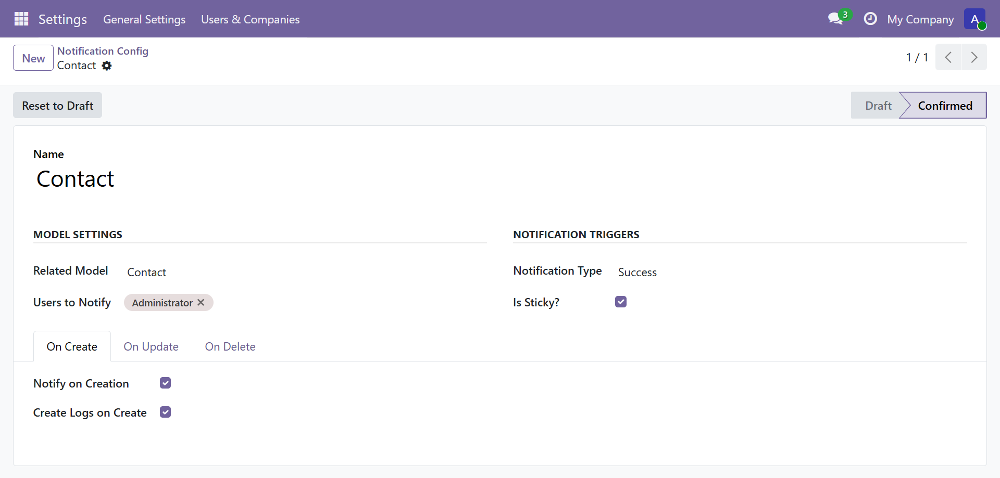
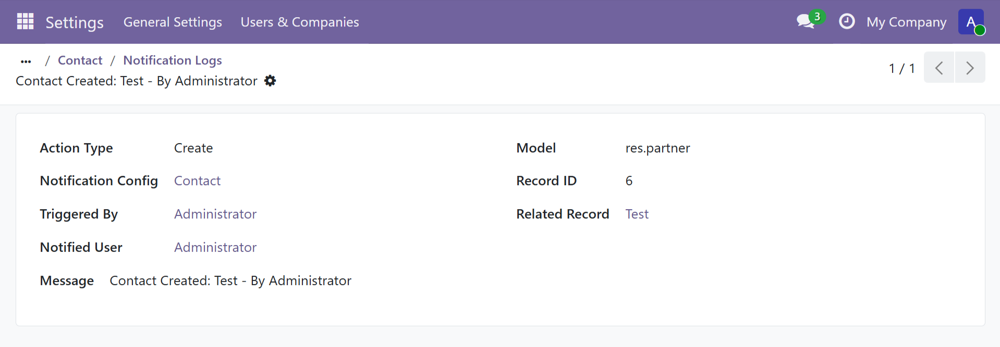
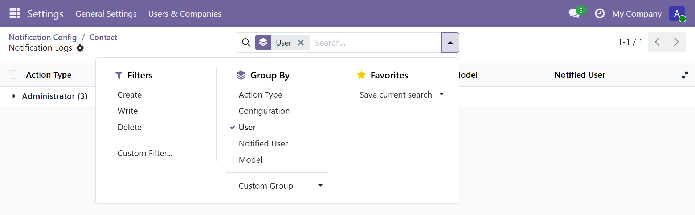

Dynamic User Notification Logs
Track dynamic user notifications with persistent logs for create, update, and delete events, including users, records, and message details.

Why Use This Module?
Real-time notifications are useful, but many businesses also need a persistent audit trail. This module extends the base notification system with searchable logs so administrators can review who triggered a notification, which record was involved, and who received it.
Business Benefits
- Keep a traceable history of notification activity
- Review which user triggered each notification
- See which users were notified for each event
- Audit create, update, and delete notification flows
Best Fit For
- Teams needing notification audit trails
- Administrators troubleshooting workflow alerts
- Operations tracking who received important notices
- Projects requiring persistent backend notification history
Dependencies
This add-on extends the base dynamic notification engine and requires the original notification module to be installed first.
dynamic_user_notification_tsplis required- It reuses the base notification configuration model and trigger engine
- This module adds logging on top of the existing notification flow
Main Features
Audit-friendly logging, configuration-level control, and easy log access from the backend.
Persistent Logs
Stores one log entry per notified user when log creation is enabled.
Per-Trigger Control
Choose separately whether create, update, or delete notifications should create logs.
Smart Button Access
Open related logs directly from a notification configuration using the Logs smart button.
Configuration Enhancements
The notification configuration form is extended with dedicated options for log creation.

Added Configuration Options
- Create Logs on Create
- Create Logs on Update
- Create Logs on Delete
- Logs smart button with record count
What Gets Logged?
Stored Log Details
- Notification configuration that generated the event
- Model name, record id, and related record reference
- Action type: create, update, or delete
- Triggered by user and notified user
- Final notification message text

Log Browsing and Analysis

Analysis Tools
- Search by message, configuration, users, model, and record
- Filter by create, update, or delete events
- Group logs by action type, configuration, user, notified user, or model
- Open logs directly in list and form views
Installation and Setup
- Ensure Dynamic User Notification is installed first
- Copy this module to your custom addons path
- Restart the Odoo server
- Update the apps list
- Install Dynamic User Notification Logs
- Enable log options on the notification configurations you want to audit
Frequently Asked Questions
Does every notification automatically create a log?
No. A log is created only when the base notification matches and the corresponding log option is enabled for that action type.
Is one log created per event or per user?
One log entry is created for each notified user, so multi-user notifications produce multiple log rows.
Can I open logs from the configuration itself?
Yes. The configuration form includes a Logs smart button that opens the related log entries for that rule.
Support and Customization
Need customization, support, or implementation help for this module? Contact us for installation assistance, feature enhancements, issue resolution, and module-specific development.
Email: technostellar03@gmail.com